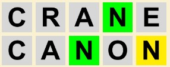

Wordle is a recently popular word game where the goal is to guess a secret 5-letter word in 6 or less tries. After each attempt, the letters of the guess will change color,
providing information on the solution.
If a character turns grey, it is NOT in the solution.
If a character turns yellow, it is in the solution but in the wrong position.
If a character turns green, it is in the correct position.
In the case of duplicates, only as many of the character are in the solution, will get colored in.
Example One: Suppose the secret word is CLEAR, and suppose we guessed CRANE and TEETH
The result would look like:

N is grey as N is not in CLEAR.
A is yellow as it is in the 4th position in CLEAR, but the 3rd position in CRANE
C is green, as it is in the first position in both CLEAR and CRANE.
In TEETH, only one E is colored in as there is only one E in CLEAR.
Example Two: Suppose the secret word is FUNNY, and we guessed CRANE and CANON.
The result would look like:

In CRANE, the one N is green as there is an N in the 4th position of FUNNY. But there can still be another N in the 3rd position.
In CANON, the first N is green as there is an N in the 3rd position of FUNNY. But the second N is yellow as there is another N in FUNNY, but it is in the 4th position.